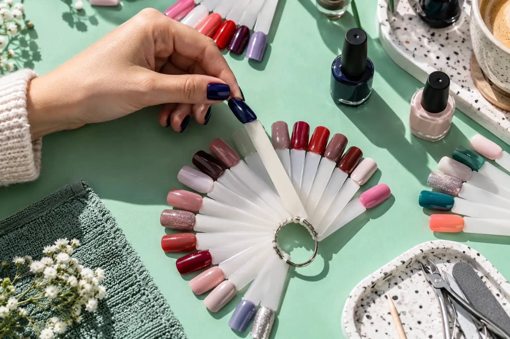

Gelinio lakavimo kaina ir trukmė: nuėmimas, bazė bei dizainas
Autorius: Madbeauty redakcija · Numatyta 2026 m. lapkričio 25 d. 10:00 (Lietuvos laiku)
Kas keičia gelinio lakavimo kainą ir vizito trukmę? Palyginkite nuėmimo, bazės, išlyginimo ir dizaino darbų apimtį.

Gelinio lakavimo kainą ir vizito laiką lyginkite pagal tą patį darbų rinkinį: ar įtrauktas senos dangos nuėmimas, kokio padengimo norite ir kiek laiko skiriama dizainui. 2026 m. spalio 9 d. peržiūrėti salonų meniu rodo, kaip šie pasirinkimai keičia konkretaus pasiūlymo kainą ir rezervuojamą laiką. Tai datuoti salonų pavyzdžiai, ne Lietuvos kainų vidurkis.
Kainos sudėtis
Palyginimui pirmiausia pasirinkite vieną paslaugos variantą. Pavyzdžiui, Vili Nails meniu aparatinį manikiūrą su ilgalaikiu lakavimu skiria pagal senos dangos nuėmimą ir pasirinktą padengimą. Meniu nurodyti tokie variantai:
- Be lako nuėmimo: tik bazė – 40 €, 1 val.; vienspalvis, prancūziškas arba ombre – 43 €, 1 val. 10 min.; maxi dailė – 46 €, 1 val. 20 min.
- Su lako nuėmimu: tik bazė – 43 €, 1 val. 15 min.; vienspalvis, prancūziškas arba ombre – 45 €, 1 val. 20 min.; maxi dailė – 50 €, 1 val. 30 min.
Šiame meniu nuėmimas prie varianto „tik bazė“ prideda 3 € ir 15 min. Kitų padengimų skirtumai kitokie, todėl vienas priedas ar vienas kainos intervalas neapibūdina visų vizitų. Nurodytos sumos ir laikai atspindi tik 2026 m. spalio 9 d. matytus šio salono pasiūlymus.
Skirtinga pradinė danga
Prieš lygindami pasiūlymus pasižymėkite, ar ant nagų jau yra danga ir ar jos nuėmimas įtrauktas į kainą. Room for nails meniu gelinio lakavimo manikiūrą pateikia su įskaičiuotu lako nuėmimu, o variantus skiria pagal naują ar esamą klientą ir pasirinktą paslaugos apimtį. Tai nėra tiesiogiai palyginama su Vili Nails pasiūlymu be nuėmimo.
- Patikrinkite, ar pasiūlyme įrašytas nuėmimas, ar jis pasirenkamas atskirai.
- Atskirkite lakavimą nuo natūralių nagų stiprinimo ar ilgio priauginimo; panašūs meniu pavadinimai nebūtinai reiškia tą patį darbą.
- Pasižiūrėkite, ar suma ir rezervuojamas laikas skiriasi naujam ir esamam klientui.
Papildomi dizaino darbai
Dizaino pavadinimas turėtų būti pakankamai konkretus, kad suprastumėte, kas įskaičiuota. Vili Nails meniu atskirai nurodo vienspalvį, prancūzišką ar ombre padengimą ir maxi dailę; jų kaina bei rezervuojamas laikas skiriasi. Room for nails taip pat turi atskirą gelinio lakavimo su dizainu pasiūlymą. Prieš rezervuodami įsitikinkite, kad pasirinktas pavyzdys atitinka būtent tą dizaino apimtį, kurią norite aptarti.
Jei dar renkatės rašto, formos ar technikos kryptį, pravers Nagų dizaino gidas: forma, spalva, technika ir darbo apimtis. Rezervuodami patikrinkite aktualią kainą, pasirinktą paslaugos variantą ir jam nurodytą laiką: meniu gali keistis.
Palyginkite procedūrų aprašus kataloge: Gelinis lakavimas. Konkrečią darbų apimtį, kainą ir prieinamumą tikrinkite prie realaus teikėjo pasiūlymo.
Planuojamos vidinės nuorodos
Šaltiniai peržiūrai
- Vili Nails · realių paslaugų variantai — 2026-10-09 Vili Nails: aparatinis manikiūras su geliniu lakavimu be nuėmimo: vienspalvis, prancūziškas ar ombre – 70 min., 43 Eur; maxi dailė – 80 min., 46 Eur. Su nuėmimu atitinkamai 80 min., 45 Eur ir 90 min., 50 Eur. Konkretaus meniu variantai, ne vieno akcento tarifas ar Lietuvos vidurkis.
- Room for nails · paslaugų apimtis — 2026-10-09 Room for nails: priauginimas iki 3 cm esamiems klientams – 135 min., 52 Eur; su dizainu – 150 min., 55 Eur. Naujiems – 195 min., 60 Eur; su dizainu – 210 min., 65 Eur. Rodomos sumažintos kainos, perbrauktos sumos yra ankstesnės. Kliento statusas nereiškia naujo rinkinio ar papildymo; meniu nėra sistemos protokolas.
- AAD · gelinis manikiūras — AAD: gelinis lakas kietinamas UV šviesa; LED žodis nėra UV nebuvimo įrodymas. Netraukti/pilnai nenuplėšti dangos. Šiame vartotojo pasirinkimo tekste nekurti universalaus nuėmimo chemijos, laikymo ar gydymo protokolo. Gelinis lakavimas savaime nėra papildomo nago ilgio kūrimas.